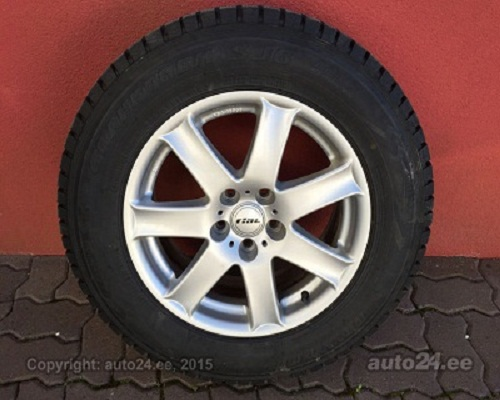

VitaLina+


Rial Kia Sorento Dunlop GRANDTREK SJ6 R17 4 шт.
Цена 250 EUR / шт 1000 EUR / комплект Цена со скидкой 145 EUR / шт 580 EUR / комплект
Подходит автомобилям
Тип: легковой автомобиль
Технические данные
Показатели диска
Изготовитель Rial Модель Kia Sorento Размер (дюйм) 17 Диаметр дыр (PCD) 5 x 139.7 литые диски Другие показатели Описание Väga heas korras, veljed nagu uued,1 talve sõitnud. Olid KIA Sorento 2012a all. Mutrid annan kaasa.Показатели резины
Изготовитель Dunlop Модель GRANDTREK SJ6 Размер 235 / 65 Диаметр 17 зимняя резина Li/Si 104Q Глубина протектора 8 mm